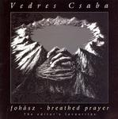

| Artist: | Csaba Vedres |
| Title: | Fohász/Breathed Prayer |
| Label: | Stereo Periferic BGCD 127 |
| Length(s): | 73 minutes |
| Year(s) of release: | 2003 |
| Month of review: | [03/2004] |
| 1) | Levelek III | 2.48 |
| 2) | Levelek IV | 1.42 |
| 3) | Levelek VII | 2.51 |
| 4) | Esö | 1.41 |
| 5) | Misericordia | 4.57 |
| 6) | Szelíd Szél | 3.34 |
| 7) | Ahoi! Ahoy! | 2.49 |
| 8) | Tánc | 1.33 |
| 9) | Lékéktánc | 4.37 |
| 10) | Improvizációk | 3.49 |
| 11-20) Szabad Otletek Jegyzéke | 13.52 | |
| 21) | Micsoda Csend | 2.30 |
| 22) | Dibtagi Hajnal | 3.47 |
| 23) | Merre Az út | 1.40 |
| 24) | Mesék I | 3.18 |
| 25) | Mesék III | 2.34 |
| 26) | Mesék VI | 1.59 |
| 27) | Hívó Jel/Cisz-dor Koncertüd | 5.25 |
| 28) | G-Dúr Szkepszis | 3.02 |
| 29) | Fekete Hangulat | 3.51 |
| 30) | Elmenöben | 1.00 |
Szelíd Szél is a bit lighter of tone and more percussive (played on piano, mind you). Ahoi! Ahoy! is also on the playful side in parts, but certainly not all of it. There is also some trumpet here. Tánc is a short piano excertition.
Lékéktánc is a more classical piece with violin the dominant factor. This song and the following one, Improvizációk are quite a bit sadder and also less melodious than the previous songs.
Szabad Otletek Jegyzéke is a name for the ten following short tracks that never fitted anywhere. Tenm short sketches, quite a bit more uplifting than the foregoing. Jazzy elements, classical elements, but also the type of tunes one hears in Hollywood movies a few decennia ago. The music sounds more 'studied' and less emotional. A bit like etudes of some kind.
Micsoda Csend opens with synth strings and the melodious, somber and nasal Hungarian vocals of Vedres. Like in the work of After Crying, the classical training of Vedres is apparent, but also like in After Crying the melodies seem the most important, a good thing in my opinion. This does not take away the fact that the music has generally a classical feel. Dibtagi Hajnal continues in very sad fashion, with somber low vocals, against the backdrop of a similarly inclined violin. A difference with earlier tracks is that here explicit percussion plays a role here, as well as somewhat noisy synths.
On this compilation the tracks are generally grouped together per album, except the Levelek tracks which were on the same album as the following three tracks. Mesék I, Mesék III, and Mesék VI are very much piano dominated, more playful than most. Especially the final part is quite fast and jazzy.
Hívó Jel/Cisz-dor Koncertüd is one of the longer tracks. The piano playing reminds strongly of the After Crying instrumentals and there is quite a bit of Emerson feel here as well.
G-Dúr Szkepszis has percussively played piano, while Fekete Hangulat is a bit darker in places. Themes also used for After Crying albums pop up here. I like the percussive playing of piano so I feel right at home here. The music is quite fast, it seems a rise of tempo is noticeable proceeding more towards the end of the album.
Elmenöben has a beautiful serene theme played on trumpet and closes down the album.